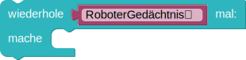
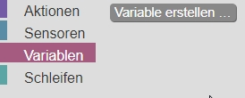
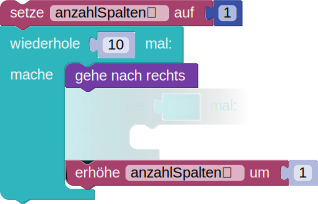

Muster mit Variablen
Der Roboter soll alle markierten Felder  färben.
färben.
Die Zahl vor dem Roboter gibt an, wie viele Felder markiert sind. Er muss diese Zahl einlesen, in einer Variablen speichern und dann diese Variable im Programm nutzen.
Weitere Hinweise:
Eine Variable speichert einen Wert, der sich im Verlauf deines Programms ändern kann.
Um die Zahl einzulesen und in der Variablen RoboterGedächtnis zu speichern, werden die folgenden Bausteine genutzt:

Du kannst die Variable anschließend dort benutzen, wo du ihren Wert benötigst, zum Beispiel:
Vor dem Roboter gibt es zwei Zahlen: Die erste Zahl gibt die Anzahl der Zeilen und die zweite Zahl die Anzahl der Spalten von dem zu färbenden Rechteck an.
Weitere Hinweise:
Um diese Aufgabe zu lösen, musst du zwei Variablen erstellen, um die beiden Zahlen zu speichern.
Nenne diese Variablen zum Beispiel AnzahlZeilen und AnzahlSpalten.

In dieser Aufgabe sind die Bausteine in Kategorien einsortiert. Klicke auf eine Kategorie, um Zugriff auf die Bausteine der Kategorie zu erhalten.
Vor dem Roboter steht eine Zahl: Die Anzahl an Zeilen und Spalten, die das Dreieck aus markierten Feldern belegt.
Weitere Hinweise:
Um die richtige Anzahl an Feldern in jeder Zeile zu färben, kannst du eine Variable für jede Zeile verwenden, die die Anzahl der zu markierenden Felder enthält. Nachdem die Zeile gefärbt wurde, solltest du die Variable um 1 erhöhen. Das könnte etwa so aussehen:
Bitte schau dir vorab die Erläuterungen der Bausteine unter "weitere Hinweise" an.
Beachte: Dein Programm muss mit allen Testfällen zurechtkommen.